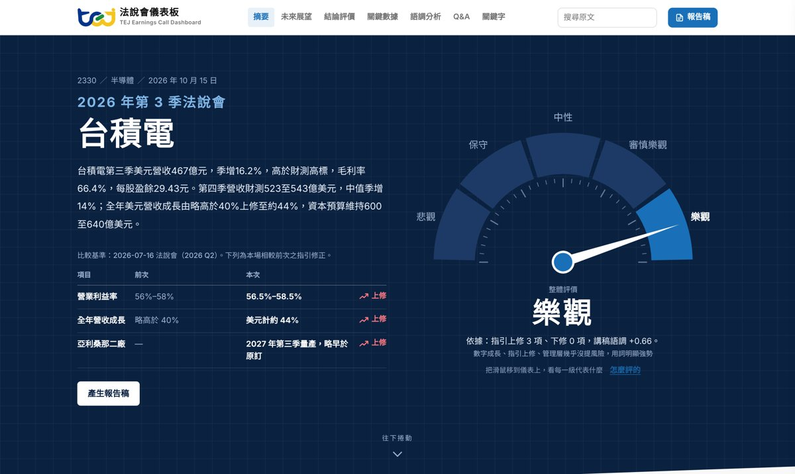
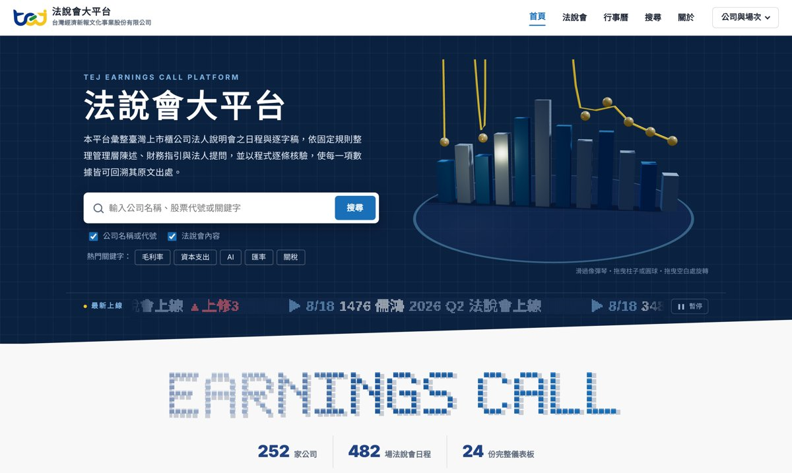
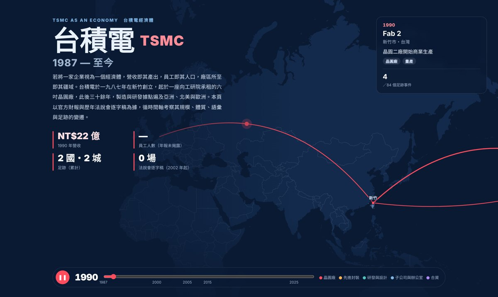

彙整臺灣上市櫃公司法人說明會的日程與逐字稿，整理為可檢索、可比較的互動儀表板；每一項數據皆附逐字稿原句，可回溯出處。



| 產生 | Claude Skill（SKILL.md、規則文件、Python 程式） |
| 網站 | HTML／CSS／JavaScript 單頁應用，three.js、d3-geo |
| 品質 | check_output.py 逐條核對；瀏覽器自動回歸測試 |
| 發布 | GitHub Actions 上線前檢查，GitHub Pages 靜態託管 |
| 成本 | 主機免費；每場儀表板約 15–19 萬 token、3–7 分鐘 |